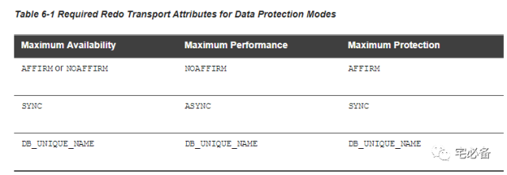

Oracle Data Guard 参数介绍
Data Guard作为Oracle提供的一个高可用及灾备解决方案,理解并可以实施它对于DBA来说是非常重要套的技能
上节介绍了有关Data Guard的概念，这节将介绍相关的一些参数
有的参数是做为备库角色时才生效的，会单独说出来
1. DB_NAME
该参数指定Oracle数据库的名称
Data Guard环境中所有数据库的DB_NAME需保持一致
db_name= dg1
2. DB_UNIQUE_NAME
该参数指定Oracle数据库的唯一名称
Data Guard环境中所有数据库的DB_UNIQUE_NAME都不能一致
DB_UNIQUE_NAME=dg1
3. LOG_ARCHIVE_CONFIG
该参数主要用来指定Data Guard环境中哪些数据库可以传输日志文件
该参数指定的数据库名称为DB_UNIQUE_NAME
该参数主备库需设置一致
LOG_ARCHIVE_CONFIG='DG_CONFIG=(dg1,dg2)'
4. LOG_ARCHIVE_FORMAT
该参数设置归档日志文件的命名格式
LOG_ARCHIVE_FORMAT=%t_%s_%r.arc
5. LOG_ARCHIVE_DEST_n
该参数控制数据库归档文件的路径，其包含下面子参数
n=1一般为本地归档路径
log_archive_dest_1=
'LOCATION=/oralog/arch
VALID_FOR=(ALL_LOGFILES,ALL_ROLES)
DB_UNIQUE_NAME=dg1'
5.1 LOCATION
指定本地归档路径，必须为第一个参数，不能和service同时出现
5.2 VALID_FOR
决定redo数据可以写入目标路径的条件
VALID_FOR=(redo_log_type,database_role)
redo_log_type 取值范围：
-
ONLINE_LOGFILE
-
STANDBY_LOGFILE
-
ALL_LOGFILES
database_role取值范围
-
PRIMARY_ROLE
-
STANDBY_ROLE
-
ALL_ROLES
5.3 DB_UNIQUE_NAME
指定该归档路径有效的db unique name
总结:
上面的配置的意思为满足下列条件时就会归档日志文件 :
-
当数据库unique名为dg1时
-
无论其是主库或者备库角色
-
无论是归档online redo log还是standby log
n>1一般为归档至远程数据库
log_archive_dest_2=
'SERVICE=dg2 LGWR SYNC AFFIRM
VALID_FOR=(ONLINE_LOGFILES,PRIMARY_ROLE)
DB_UNIQUE_NAME=dg2'
5.4 SERVICE
指定远程数据库的service name，必须为第一个参数，不能和location同时出现
5.5 LGWR ARCH
指定收集和传输redo数据的后台进程,包括:
-
ARCH：此为默认配置，但是只能用于最大性能模式
-
LGWR：使用LGWR进程，可用于所有保护模式
无法同时使用2个进程用于发送redo数据到目标路径
5.6 SYNC ASYNC
默认值:ASYNC
-
SYNC(同步)时,redo data在传输到所有启用的路径前transaction不可以commit
-
ASYNC(异步)时,redo data在传输到所有启用的路径前transaction可以commit
5.7 AFFIRM NOAFFIRM
-
AFFIRM时，在主库redo data写入所有备库standby redo log后确认已收到redo log，当SYNC属性指定时该属性是默认值
-
NOAFFIRM时，AFFIRM时，在主库redo data 写入所有备库redo log前确认已收到redo log，当ASYNC属性指定时该属性是默认值
总结:
上面的配置的意思为满足下列条件时就会归档日志文件到远程路径 :
-
当数据库unique 名为dg2时
-
需要处于主库角色
-
需要归档的redo data是online log file
-
使用LGWR进程
-
必须等所有redo data传输到目标路径才可以完成commit
-
在redo data完成传输到standby redo log后才确认完成
主库保护模式相应的属性需求:

上图表面了我们实际需求的保护模式相对应的一些参数设置
6. LOG_ARCHIVE_DEST_STATE_n
该参数控制LOG_ARCHIVE_DEST_n参数的有效性
LOG_ARCHIVE_DEST_STATE_1=ENABLE
LOG_ARCHIVE_DEST_STATE_2=ENABLE
具体请查看如下连接
Oracle基本参数(LOG_ARCHIVE_DEST_STATE_n)
7. REMOTE_LOGIN_PASSWORDFILE
该参数在使用密码文件验证时必须使用EXCLUSIVE
具体请查看如下连接
Oracle基本参数(REMOTE_LOGIN_PASSWORDFILE)
8. DB_FILE_NAME_CONVERT
该参数控制主库数据文件到备库时的路径转换规则
如主备库目录结构一直可直接写服务名
该参数只在备库(Standby)角色时有效，但Oracle建议主库也设置，方便以后的角色转换
DB_FILE_NAME_CONVERT = 'string1' , 'string2' , 'string3' , 'string4' , ...
-
string1 是 主库数据文件的路径
-
string2 是备库数据文件的路径
-
string3 是 主库数据文件的路径
-
string4 是备库数据文件的路径
以此类推，数量不限
9. LOG_FILE_NAME_CONVERT
该参数控制主库online log file到备库时的路径转换规则
如主备库目录结构一直可直接写服务名
该参数只在备库(Standby)角色时有效，但Oracle建议主库也设置，方便以后的角色转换
LOG_FILE_NAME_CONVERT = 'string1' , 'string2' , 'string3' , 'string4' , ...
-
string1 是主库数据文件的路径
-
string2 是备库数据文件的路径
-
string3 是主库数据文件的路径
-
string4 是备库数据文件的路径
以此类推，数量不限
10. STANDBY_FILE_MANAGEMENT
该参数控制是否自动在备库中建立主库新建的数据文件
注意下面两点:
-
不会自动创建日志文件
-
如果数据文件重名会覆盖现有文件
该参数只在备库(Standby)角色时有效，但Oracle建议主库也设置，方便以后的角色转换
STANDBY_FILE_MANAGEMENT=AUTO
11. FAL_SERVER
FAL=fetch archive log，这个参数设定备库从哪里获取归档日志，一般设定为主库的服务名(service name)
该参数只在备库(Standby)角色时有效，但Oracle建议主库也设置，方便以后的角色转换
FAL_SERVER=dg2
12. FAL_CLIENT
设定FAL的客户端名称，一把为本地数据库的服务名
该参数只在备库(Standby)角色时有效，但Oracle建议主库也设置，方便以后的角色转换
FAL_CLIENT=dg1
好了 DataGuard需要用到的参数讲到这了，下节介绍Data Guard 是如何工作的